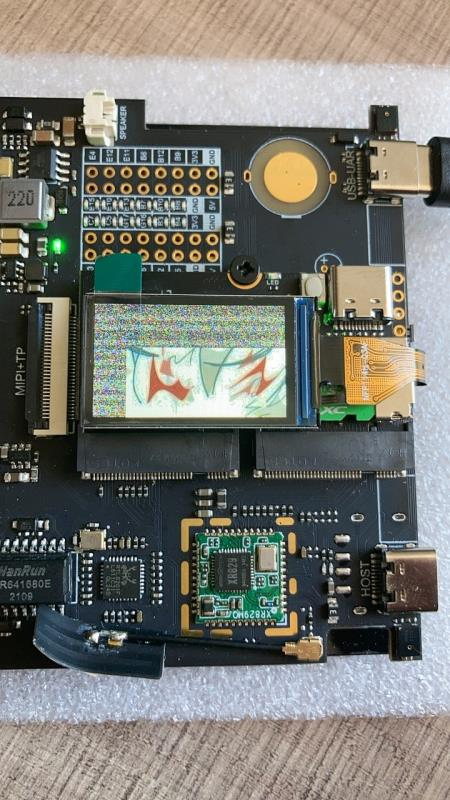
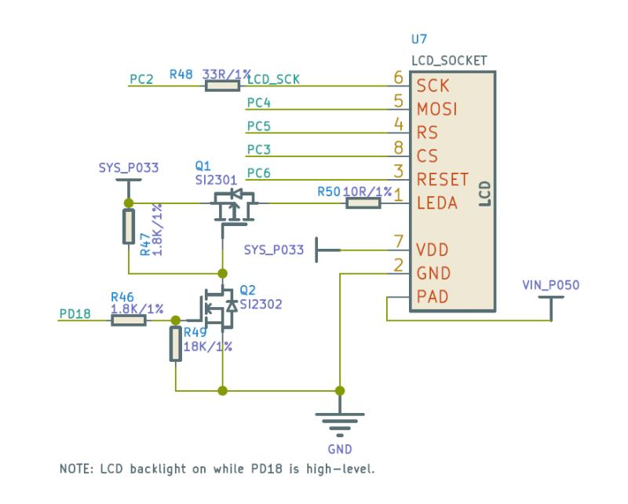
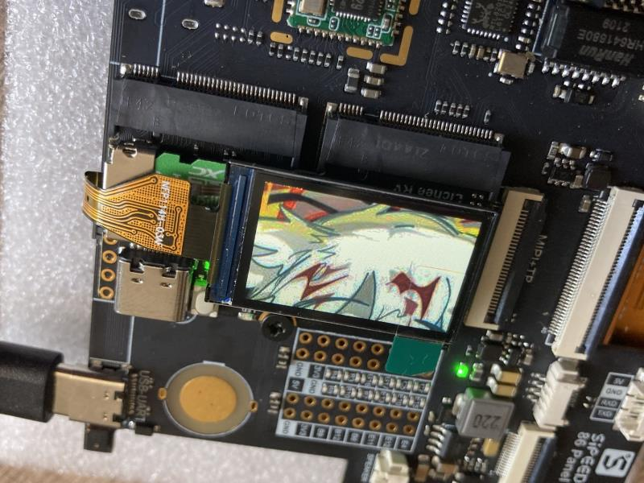
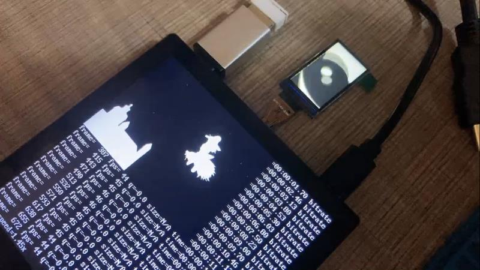

使用 LicheeRV 86 Panel 与 Tina BSP 实现 RGB 与 SPI 双屏显示
编辑于2022年3月28日
Tina 提供了2种 SPI TFT 显示屏的驱动方式。
- 第一种是官方推荐的 fbdev 方式，使用 Framebuffer implementaion without display hardware of AW 进行 SPI屏幕的驱动。
- 另外一种是使用 fbtft 进行 SPI 屏幕驱动。
fbdev 方式由于 pinctrl 在新内核中调用方式出现修改，所以暂时无法使用。修改难度较大。
fbtft 虽然官方wiki表明不建议在 Linux 5.4 中使用，但是其实也是可以使用的，只需要修改一下 GPIO 的注册方式就行。
环境搭建
下面三种方法选择一种即可
先驱动 SPI 屏幕
这里驱动的屏幕所选择的是 ST7789V SPI
修改 FBTFT 驱动
进入 tina-d1-open/lichee/linux-5.4/drivers/staging/fbtft 找到 fbtft-core.c
首先加入将要使用到的头文件
#include <linux/gpio.h>
#include <linux/of_gpio.h>
然后找到 static int fbtft_request_one_gpio() 函数，将已经弃用的端口绑定方法改为以下内容
static int fbtft_request_one_gpio(struct fbtft_par *par,
const char *name, int index,
struct gpio_desc **gpiop)
{
struct device *dev = par->info->device;
struct device_node *node = dev->of_node;
int gpio, flags, ret = 0;
enum of_gpio_flags of_flags;
if (of_find_property(node, name, NULL)) {
gpio = of_get_named_gpio_flags(node, name, index, &of_flags);
if (gpio == -ENOENT)
return 0;
if (gpio == -EPROBE_DEFER)
return gpio;
if (gpio < 0) {
dev_err(dev,
"failed to get '%s' from DT\n", name);
return gpio;
}
flags = (of_flags & OF_GPIO_ACTIVE_LOW) ? GPIOF_OUT_INIT_LOW :
GPIOF_OUT_INIT_HIGH;
ret = devm_gpio_request_one(dev, gpio, flags,
dev->driver->name);
if (ret) {
dev_err(dev,
"gpio_request_one('%s'=%d) failed with %d\n",
name, gpio, ret);
return ret;
}
*gpiop = gpio_to_desc(gpio);
fbtft_par_dbg(DEBUG_REQUEST_GPIOS, par, "%s: '%s' = GPIO%d\n",
__func__, name, gpio);
}
return ret;
}
找到 static void fbtft_reset() 函数，将 RST 信号最后拉高
static void fbtft_reset(struct fbtft_par *par)
{
if (!par->gpio.reset)
return;
fbtft_par_dbg(DEBUG_RESET, par, "%s()\n", __func__);
gpiod_set_value_cansleep(par->gpio.reset, 1);
msleep(10);
gpiod_set_value_cansleep(par->gpio.reset, 0);
msleep(200);
gpiod_set_value_cansleep(par->gpio.reset, 1);
msleep(10);
}
找到 static void fbtft_set_addr_win() 函数，添加地址偏移。否则会出现下图部分雪花屏现象。

static void fbtft_set_addr_win(struct fbtft_par *par, int xs, int ys, int xe,
int ye)
{
switch(par->info->var.rotate)
{
case 0: xs+=53;xe+=53;ys+=40;ye+=40;
break;
case 90: xs+=40;xe+=40;ys+=53;ye+=53;
break;
case 180: xs+=53;xe+=53;ys+=40;ye+=40;
break;
case 270: xs+=40;xe+=40;ys+=53;ye+=53;
break;
default :
break;
}
write_reg(par, MIPI_DCS_SET_COLUMN_ADDRESS,
(xs >> 8) & 0xFF, xs & 0xFF, (xe >> 8) & 0xFF, xe & 0xFF);
write_reg(par, MIPI_DCS_SET_PAGE_ADDRESS,
(ys >> 8) & 0xFF, ys & 0xFF, (ye >> 8) & 0xFF, ye & 0xFF);
write_reg(par, MIPI_DCS_WRITE_MEMORY_START);
}
当前目录下找到 fb_st7789v.c，参照STM32的初始化函数对初始化部分进行修改。
static int init_display(struct fbtft_par *par)
{
par->fbtftops.reset(par);
mdelay(50);
write_reg(par,0x36,0x00);
write_reg(par,0x3A,0x05);
write_reg(par,0xB2,0x0C,0x0C,0x00,0x33,0x33);
write_reg(par,0xB7,0x35);
write_reg(par,0xBB,0x19);
write_reg(par,0xC0,0x2C);
write_reg(par,0xC2,0x01);
write_reg(par,0xC3,0x12);
write_reg(par,0xC4,0x20);
write_reg(par,0xC6,0x0F);
write_reg(par,0xD0,0xA4,0xA1);
write_reg(par,0xE0,0xD0,0x04,0x0D,0x11,0x13,0x2B,0x3F,0x54,0x4C,0x18,0x0D,0x0B,0x1F,0x23);
write_reg(par,0xE1,0xD0,0x04,0x0C,0x11,0x13,0x2C,0x3F,0x44,0x51,0x2F,0x1F,0x1F,0x20,0x23);
write_reg(par,0x21);
write_reg(par,0x11);
mdelay(50);
write_reg(par,0x29);
mdelay(200);
return 0;
}
将相关参数配置为屏幕实际大小
static struct fbtft_display display = {
.regwidth = 8,
.width = 135,
.height = 240,
.gamma_num = 2,
.gamma_len = 14,
.gamma = DEFAULT_GAMMA,
.fbtftops = {
.init_display = init_display,
.set_var = set_var,
.set_gamma = set_gamma,
.blank = blank,
},
};
设备树修改
首先打开电路图，找到 SPI 屏幕的电路。

根据电路，在 tina-d1-open_new/device/config/chips/d1/configs/nezha/board.dts0 文件中 找到 pio 节点，添加 SPI0 所用引脚；spi0_pins_a 作为数据时钟绑定，spi0_pins_b 作为 CS 的绑定，并上拉。RST、DC、背光引脚在这里不做声明。
&spi0 {
clock-frequency = <100000000>;
pinctrl-0 = <&spi0_pins_a &spi0_pins_b>;
status = "okay";
st7789v@0 {
status = "okay";
compatible = "sitronix,st7789v";
reg = <0>;
spi-max-frequency = <32000000>;
rotate = <90>;
rgb;
fps = <30>;
buswidth = <8>;
reset = <&pio PC 6 GPIO_ACTIVE_LOW>;
dc = <&pio PC 5 GPIO_ACTIVE_LOW>;
led = <&pio PD 18 GPIO_ACTIVE_HIGH>;
debug = <1>;
};
};
最后，将不需要的屏幕关闭，方便调试
&disp {
disp_init_enable = <0>;
......
}
&lcd0 {
lcd_used = <0>;
......
}
&hdmi {
hdmi_used = <0>;
......
}
内核配置
进入 kernel_menuconfig ，开启 FBTFT，关闭 RGB、MIPI 所使用的 DISP Driver Support(sunxi-disp2) 输出。
Device Drivers --->
Graphics support --->
Frame buffer Devices --->
<*> Support for frame buffer devices --->
Video support for sunxi --->
< > DISP Driver Support(sunxi-disp2)
[*] Staging drivers --->
<*> Support for small TFT LCD display modules --->
<*> FB driver for the ST7789V LCD Controller
由于上面配置关闭了 DISP Driver Support(sunxi-disp2) ，所用需要在 menuconfig 里将内核模块关闭，否则会出现找不到驱动的错误。
Kernel modules --->
Video Support --->
< > kmod-sunxi-disp....................................... sunxi-disp support
< > kmod-sunxi-g2d......................................... sunxi-g2d support
< > kmod-sunxi-hdmi....................................... sunxi-hdmi support
< > kmod-sunxi-uvc......................................... sunxi-uvc support
编译，打包，使用 fbviewer 进行测试
make -j65535
pack
fbviewer Yuzuki.jpg

修改为双屏驱动
修改双屏也很简单，SPI 屏幕调试完成之后，将刚才关闭的各类驱动打开即可。
配置设备树
找到 SPI0 节点，将背光 led 注释掉，查看电路图可知 RGB 屏幕和 SPI 屏幕使用的背光是同一个，这里不需要分开注册。
&spi0 {
clock-frequency = <100000000>;
pinctrl-0 = <&spi0_pins_a &spi0_pins_b>;
status = "okay";
st7789v@0 {
status = "okay";
compatible = "sitronix,st7789v";
reg = <0>;
spi-max-frequency = <32000000>;
rotate = <90>;
rgb;
fps = <30>;
buswidth = <8>;
reset = <&pio PC 6 GPIO_ACTIVE_LOW>;
dc = <&pio PC 5 GPIO_ACTIVE_LOW>;
// led = <&pio PD 18 GPIO_ACTIVE_HIGH>;
debug = <1>;
};
};
把之前关闭的显示输出重新打开
&disp {
disp_init_enable = <1>;
......
}
&lcd0 {
lcd_used = <1>;
......
}
&hdmi {
hdmi_used = <1>;
......
}
配置内核
进入 kernel_menuconfig ，开启 DISP Driver Support(sunxi-disp2) 输出，并选择面板驱动。
Device Drivers --->
Graphics support --->
Frame buffer Devices --->
<*> Support for frame buffer devices --->
Video support for sunxi --->
<*> DISP Driver Support(sunxi-disp2)
<*> HDMI2.0 Driver Support(sunxi-disp2)
HDMI2.0 PHY SELECT. (Allwinner PHY) --->
LCD panels select --->
[*] LCD support ST7701S RGB panel
[*] Staging drivers --->
<*> Support for small TFT LCD display modules --->
<*> FB driver for the ST7789V LCD Controller
在 menuconfig 里将内核模块重新打开。
Kernel modules --->
Video Support --->
<*> kmod-sunxi-disp....................................... sunxi-disp support
<*> kmod-sunxi-g2d......................................... sunxi-g2d support
<*> kmod-sunxi-hdmi....................................... sunxi-hdmi support
<*> kmod-sunxi-uvc......................................... sunxi-uvc support
编译，打包，测试。这里使用 ffmpeg 进行双屏播放 badapple.mp4

附录：部分设备树完整参考（配置双屏后，HDMI禁用了）
&pio {
...前略...
spdif_pins_b: spdif_sleep@0 {
pins = "PB0";
function = "io_disabled";
drive-strength = <20>;
bias-disable;
};
spi0_pins_a: spi0@0 {
pins = "PC2", "PC4"; /*clk mosi*/
function = "spi0";
drive-strength = <10>;
};
spi0_pins_b: spi0@1 {
pins = "PC3";
function = "spi0";
drive-strength = <10>;
bias-pull-up; // only CS should be pulled up
};
spi1_pins_a: spi1@0 {
pins = "PD11", "PD12", "PD13","PD14", "PD15"; /*clk mosi miso hold wp*/
function = "spi1";
drive-strength = <10>;
};
spi1_pins_b: spi1@1 {
pins = "PD10";
function = "spi1";
drive-strength = <10>;
bias-pull-up; // only CS should be pulled up
};
spi1_pins_c: spi1@2 {
pins = "PD10", "PD11", "PD12", "PD13","PD14", "PD15";
function = "gpio_in";
drive-strength = <10>;
};
ledc_pins_a: ledc@0 {
pins = "PC0";
function = "ledc";
drive-strength = <10>;
};
ledc_pins_b: ledc@1 {
pins = "PC0";
function = "gpio_in";
};
...后略...
}；
&spi0 {
clock-frequency = <100000000>;
pinctrl-0 = <&spi0_pins_a &spi0_pins_b>;
status = "okay";
st7789v@0 {
status = "okay";
compatible = "sitronix,st7789v";
reg = <0>;
spi-max-frequency = <32000000>;
rotate = <90>;
rgb;
fps = <30>;
buswidth = <8>;
reset = <&pio PC 6 GPIO_ACTIVE_LOW>;
dc = <&pio PC 5 GPIO_ACTIVE_LOW>;
// led = <&pio PD 18 GPIO_ACTIVE_HIGH>;
debug = <1>;
};
};
/*----------------------------------------------------------------------------------
disp init configuration
disp_mode (0:screen0<screen0,fb0>)
screenx_output_type (0:none; 1:lcd; 2:tv; 3:hdmi;5:vdpo)
screenx_output_mode (used for hdmi output, 0:480i 1:576i 2:480p 3:576p 4:720p50)
(5:720p60 6:1080i50 7:1080i60 8:1080p24 9:1080p50 10:1080p60)
screenx_output_format (for hdmi, 0:RGB 1:yuv444 2:yuv422 3:yuv420)
screenx_output_bits (for hdmi, 0:8bit 1:10bit 2:12bit 2:16bit)
screenx_output_eotf (for hdmi, 0:reserve 4:SDR 16:HDR10 18:HLG)
screenx_output_cs (for hdmi, 0:undefined 257:BT709 260:BT601 263:BT2020)
screenx_output_dvi_hdmi (for hdmi, 0:undefined 1:dvi mode 2:hdmi mode)
screen0_output_range (for hdmi, 0:default 1:full 2:limited)
screen0_output_scan (for hdmi, 0:no data 1:overscan 2:underscan)
screen0_output_aspect_ratio (for hdmi, 8-same as original picture 9-4:3 10-16:9 11-14:9)
fbx format (4:RGB655 5:RGB565 6:RGB556 7:ARGB1555 8:RGBA5551 9:RGB888 10:ARGB8888 12:ARGB4444)
fbx pixel sequence (0:ARGB 1:BGRA 2:ABGR 3:RGBA)
fb0_scaler_mode_enable(scaler mode enable, used FE)
fbx_width,fbx_height (framebuffer horizontal/vertical pixels, fix to output resolution while equal 0)
lcdx_backlight (lcd init backlight,the range:[0,256],default:197
lcdx_yy (lcd init screen bright/contrast/saturation/hue, value:0~100, default:50/50/57/50)
lcd0_contrast (LCD contrast, 0~100)
lcd0_saturation (LCD saturation, 0~100)
lcd0_hue (LCD hue, 0~100)
framebuffer software rotation setting:
disp_rotation_used: (0:disable; 1:enable,you must set fbX_width to lcd_y,
set fbX_height to lcd_x)
degreeX: (X:screen index; 0:0 degree; 1:90 degree; 3:270 degree)
degreeX_Y: (X:screen index; Y:layer index 0~15; 0:0 degree; 1:90 degree; 3:270 degree)
devX_output_type : config output type in bootGUI framework in UBOOT-2018.
(0:none; 1:lcd; 2:tv; 4:hdmi;)
devX_output_mode : config output resolution(see include/video/sunxi_display2.h) of bootGUI framework in UBOOT-2018
devX_screen_id : config display index of bootGUI framework in UBOOT-2018
devX_do_hpd : whether do hpd detectation or not in UBOOT-2018
chn_cfg_mode : Hardware DE channel allocation config. 0:single display with 6
channel, 1:dual display with 4 channel in main display and 2 channel in second
display, 2:dual display with 3 channel in main display and 3 channel in second
in display.
----------------------------------------------------------------------------------*/
&disp {
disp_init_enable = <1>;
disp_mode = <0>;
screen0_output_type = <1>;
screen0_output_mode = <4>;
screen1_output_type = <3>;
screen1_output_mode = <10>;
screen1_output_format = <0>;
screen1_output_bits = <0>;
screen1_output_eotf = <4>;
screen1_output_cs = <257>;
screen1_output_dvi_hdmi = <2>;
screen1_output_range = <2>;
screen1_output_scan = <0>;
screen1_output_aspect_ratio = <8>;
dev0_output_type = <1>;
dev0_output_mode = <4>;
dev0_screen_id = <0>;
dev0_do_hpd = <0>;
dev1_output_type = <4>;
dev1_output_mode = <10>;
dev1_screen_id = <1>;
dev1_do_hpd = <1>;
def_output_dev = <0>;
hdmi_mode_check = <1>;
fb0_format = <0>;
fb0_width = <0>;
fb0_height = <0>;
fb1_format = <0>;
fb1_width = <0>;
fb1_height = <0>;
chn_cfg_mode = <1>;
disp_para_zone = <1>;
/*VCC-LCD*/
/* dc1sw-supply = <®_dc1sw>;*/
/*VCC-DSI*/
/* eldo3-supply = <®_eldo3>;*/
/*VCC-PD*/
/* dcdc1-supply = <®_dcdc1>;*/
};
/*----------------------------------------------------------------------------------
;lcd0 configuration
;lcd_if: 0:hv(sync+de); 1:8080; 2:ttl; 3:lvds; 4:dsi; 5:edp; 6:extend dsi
;lcd_hv_if 0:Parallel RGB; 8:Serial RGB; 10:Dummy RGB; 11: RGB Dummy;12:CCIR656
;lcd_hv_clk_phase 0:0 degree;1:90 degree;2:180 degree;3:270 degree
;lcd_hv_sync_polarity 0:vs low,hs low; 1:vs high,hslow; 2:vs low,hs high; 3:vs high,hs high
;lcd_hv_syuv_seq 0:YUYV; 1:YVYU; 2:UYVY; 3:VYUY
;lcd_cpu_if 0:18bit/1 cycle parallel(RGB666); 4:16bit/1cycle parallel (RGB565)
; 6:18bit/3 cycle parallel(RGB666); 7:16bit/2cycle parallel (RGB565)
;lcd_cpu_te 0:frame auto trigger; 1:frame triggered by te rising edge; 2:frame triggered by te falling edge;
;lcd_dsi_if 0:video mode; 1: Command mode; 2:video burst mode
;lcd_dsi_te 0:frame auto trigger; 1:frame triggered by te rising edge; 2:frame triggered by te falling edge;
;lcd_x: lcd horizontal resolution
;lcd_y: lcd vertical resolution
;lcd_width: width of lcd in mm
;lcd_height: height of lcd in mm
;lcd_dclk_freq: in MHZ unit
;lcd_pwm_freq: in HZ unit
;lcd_pwm_pol: lcd backlight PWM polarity
;lcd_pwm_max_limit lcd backlight PWM max limit(<=255)
;lcd_hbp: hsync back porch(pixel) + hsync plus width(pixel);
;lcd_ht: hsync total cycle(pixel)
;lcd_vbp: vsync back porch(line) + vysnc plus width(line)
;lcd_vt: vysnc total cycle(line)
;lcd_hspw: hsync plus width(pixel)
;lcd_vspw: vysnc plus width(pixel)
;lcd_lvds_if: 0:single link; 1:dual link
;lcd_lvds_colordepth: 0:8bit; 1:6bit
;lcd_lvds_mode: 0:NS mode; 1:JEIDA mode
;lcd_frm: 0:disable; 1:enable rgb666 dither; 2:enable rgb656 dither
;lcd_io_phase: 0:noraml; 1:intert phase(0~3bit: vsync phase; 4~7bit:hsync phase;
; 8~11bit:dclk phase; 12~15bit:de phase)
;lcd_gamma_en lcd gamma correction enable
;lcd_bright_curve_en lcd bright curve correction enable
;lcd_cmap_en lcd color map function enable
;deu_mode 0:smoll lcd screen; 1:large lcd screen(larger than 10inch)
;lcdgamma4iep: Smart Backlight parameter, lcd gamma vale * 10;
; decrease it while lcd is not bright enough; increase while lcd is too bright
;smart_color 90:normal lcd screen 65:retina lcd screen(9.7inch)
;Pin setting for special function ie.LVDS, RGB data or vsync
; name(donot care) = port:PD12<pin function><pull up or pull down><drive ability><output level>
;Pin setting for gpio:
; lcd_gpio_X = port:PD12<pin function><pull up or pull down><drive ability><output level>
;Pin setting for backlight enable pin
; lcd_bl_en = port:PD12<pin function><pull up or pull down><drive ability><output level>
;fsync setting, pulse to csi
;lcd_fsync_en (0:disable fsync,1:enable)
;lcd_fsync_act_time (active time of fsync, unit:pixel)
;lcd_fsync_dis_time (disactive time of fsync, unit:pixel)
;lcd_fsync_pol (0:positive;1:negative)
;gpio config: <&pio for cpu or &r_pio for cpus, port, port num, pio function,
pull up or pull down(default 0), driver level(default 1), data>
;For dual link lvds: use lvds2link_pins_a and lvds2link_pins_b instead
;For rgb24: use rgb24_pins_a and rgb24_pins_b instead
;For lvds1: use lvds1_pins_a and lvds1_pins_b instead
;For lvds0: use lvds0_pins_a and lvds0_pins_b instead
;----------------------------------------------------------------------------------*/
&lcd0 {
lcd_used = <1>;
lcd_driver_name = "st7701s_rgb";
lcd_if = <0>;
lcd_hv_if = <0>;
lcd_width = <70>;
lcd_height = <72>;
lcd_x = <480>;
lcd_y = <480>;
lcd_dclk_freq = <19>;
lcd_hbp = <60>;
lcd_ht = <612>;
lcd_hspw = <12>;
lcd_vbp = <18>;
lcd_vt = <520>;
lcd_vspw = <4>;
lcd_backlight = <50>;
lcd_pwm_used = <1>;
lcd_pwm_ch = <7>;
lcd_pwm_freq = <20000>;
lcd_pwm_pol = <1>;
lcd_bright_curve_en = <0>;
lcd_frm = <1>;
lcd_io_phase = <0x0000>;
lcd_gamma_en = <0>;
lcd_cmap_en = <0>;
lcd_hv_clk_phase= <0>;
lcd_hv_sync_polarity= <0>;
lcd_rb_swap = <0>;
lcd_power = "vcc-lcd";
lcd_pin_power = "vcc-pd";
lcd_gpio_0 = <&pio PG 13 GPIO_ACTIVE_HIGH>;
lcd_gpio_1 = <&pio PE 14 GPIO_ACTIVE_HIGH>;
lcd_gpio_2 = <&pio PE 12 GPIO_ACTIVE_HIGH>;
lcd_gpio_3 = <&pio PE 15 GPIO_ACTIVE_HIGH>;
pinctrl-0 = <&rgb18_pins_a>;
pinctrl-1 = <&rgb18_pins_b>;
};
&hdmi {
hdmi_used = <0>;
hdmi_power_cnt = <0>;
hdmi_cts_compatibility = <1>;
hdmi_hdcp_enable = <1>;
hdmi_hdcp22_enable = <0>;
hdmi_cec_support = <1>;
hdmi_cec_super_standby = <0>;
ddc_en_io_ctrl = <0>;
power_io_ctrl = <0>;
};